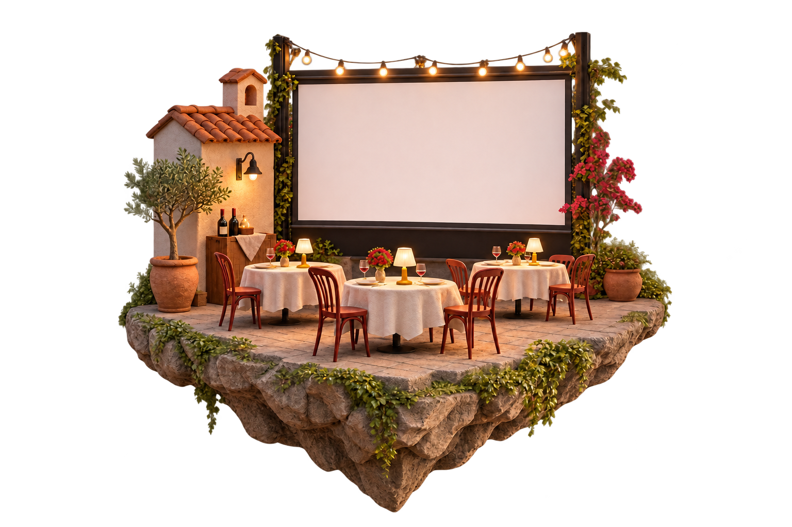
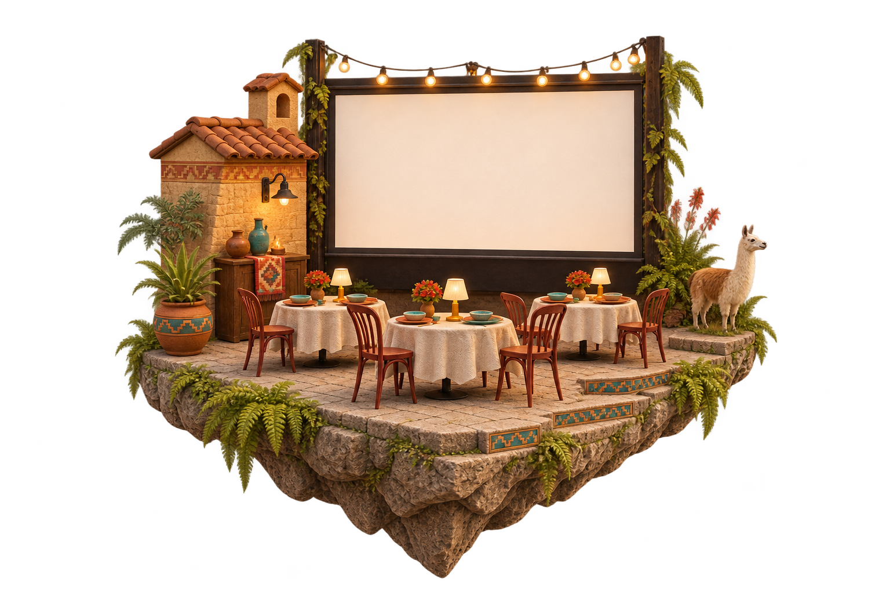
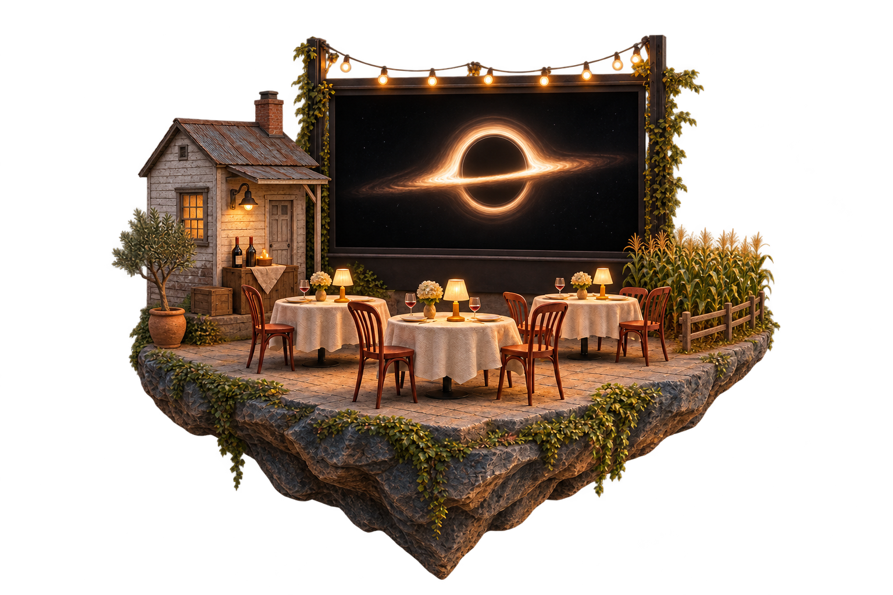

Barbie
Data e luogo da annunciare

QUARTAPARETE è un evento di cinema gastronomico itinerante.
Prendi posto, le luci si abbassano e sullo schermo torna una storia che magari conosci a memoria, ma che riesce ancora a farti emozionare. A tavola, un menù di quattro portate ne riprende i colori e le atmosfere. A volte basta un sapore per farti ripensare a una scena che avevi dimenticato. Ogni serata si svolge in un posto diverso, con un nuovo film da vivere insieme.
Data e luogo da annunciare

Data e luogo da annunciare

Data e luogo da annunciare